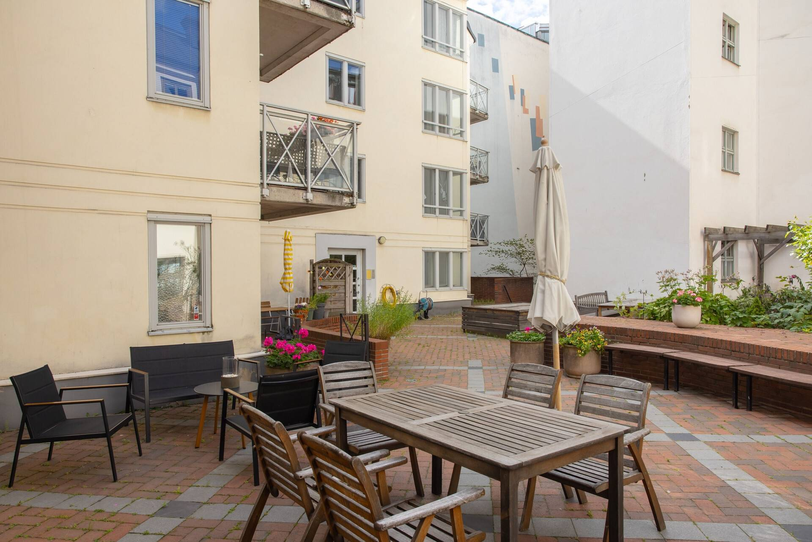
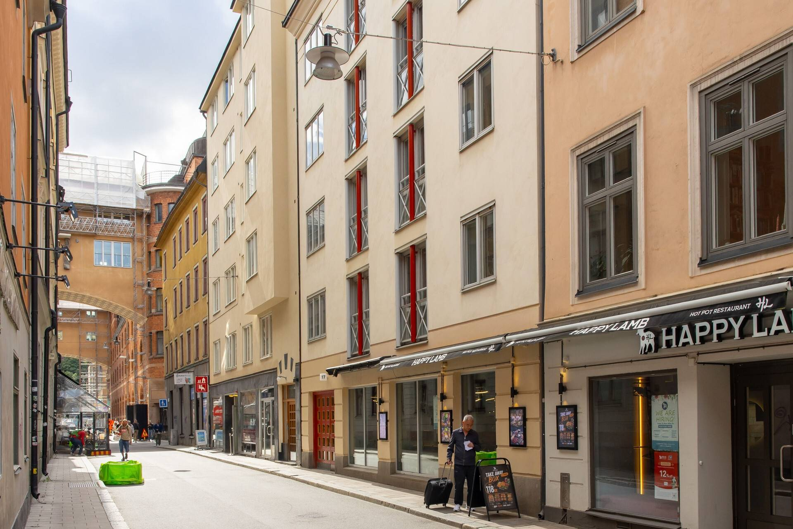

Här finns den information som köpare och mäklare brukar efterfråga inför en försäljning. Hittar du inte svaret, kontakta styrelsen via e-postadressen under Kontakt.
Om föreningen
| Organisationsnummer | 769610-0820 |
|---|---|
| Byggnader | Klara Norra Kyrkogata 17 (byggt 1989) Gamla Brogatan 25 (byggt 1753) |
| Föreningen registrerad | 2003 |
| Antal bostadsrätter | 20 st |
| Antal hyresrätter | 0 st |
| Boarea bostadsrätter | 1 719 m² |
| Lokaler | 3 lokaler, samtliga uthyrda (två restauranger och en frisör), se Lokalhyresgäster |
| Garageplatser | 16 st |
| Markägande | Tomträtt (Stockholms stad) |
| Äkta förening | Ja |
| Samfällighet | Medlem i GA:1 med 16 % andel (grind och entré-/garageport) |
| Fastighetsförsäkring | Stockholms Stads Brandförsäkringskontor |
| Ekonomisk förvaltare | Simpleko |


Lokalhyresgäster
I husets bottenvåning hyr föreningen ut tre lokaler till följande verksamheter:
| Happy Lamb | Restaurang |
|---|---|
| Saigon | Restaurang |
| Hair & Care Stockholm AB | Frisörsalong |
Hyresintäkterna från lokalerna är en del av föreningens intäkter.
Ekonomi
| Årsavgift | 857 kr/m² och år (2025) |
|---|---|
| Senaste avgiftsändring | Oförändrad 2025 och 2026 |
| Ingår i avgiften | Värme, vatten, bredband och kabel-TV |
| Ingår inte | Hushållsel |
Nyckeltal enligt årsredovisning 2025
| Skuldsättning per m² bostadsrättsyta | 9 701 kr |
|---|---|
| Sparande per m² totalyta | 277 kr |
| Räntekänslighet | 11,32 % |
| Soliditet | 61 % |
| Fond för yttre underhåll | 2 865 399 kr |
| Tomträttsavgäld | 1 108 000 kr/år |
Årsredovisningar
- Årsredovisning 2025 (PDF)
- Årsredovisning 2024 (PDF)
Uppgifterna avser nuläget och utgör inte något åtagande om framtida avgifter. Fullständig information finns i den senaste årsredovisningen.
Bredband & TV
| Leverantör | Tele2 |
|---|---|
| Bredband | Ingår i avgiften. 500 Mbit/s nedströms, 50 Mbit/s uppströms |
| TV | Kabel-TV ingår i avgiften. Kanaler: SVT1, SVT2, TV4 och Viaplay |
| Router | Ingår i abonnemanget |
Underhåll
Föreningen har en underhållsplan som upprättades 2024, uppdaterades 2025 och sträcker sig till 2074.
Genomfört
| 2025 | Ommålning och renovering av tak, relining av en avloppsstam, renovering av utomhustrappa till gemensamhetsanläggning |
|---|---|
| 2024 | Renovering av avlopp till restaurang, ny fettavskiljare för restaurangerna, ny armatur i marmorgången |
| 2023 | Renovering av avlopp till restaurang |
| 2022 | Färdigställd OVK (obligatorisk ventilationskontroll) |
| 2019 | Byte av armaturer |
| 2018 | Relining av avloppsstammar, stamspolning, tätning av gården |
| 2017 | Nya fläktmotorer |
| 2016 | Tvättstuga och hissar, LED-belysning, ny port |
| 2015 | Renovering av tvättstuga, nya fläktmotorer till ventilation, målning av tak, LED-belysning i trapphus |
Planerat 2026
- Åtgärda läcka i förråd
- Planerat underhåll av ventilation
- Renovering av fönster mot innergården
Underhållsplanen ses över årligen och tidpunkterna kan ändras.
Regler & praktiskt
- Stadgar (PDF, registrerade 2024)
| Andrahandsuthyrning | Tillåten efter godkännande av styrelsen |
|---|---|
| Juridisk person | Prövas av styrelsen och kan nekas medlemskap (stadgarna § 3) |
| Överlåtelseavgift | Högst 2,5 % av prisbasbeloppet, betalas av köparen (stadgarna § 9) |
| Pantsättningsavgift | Högst 1 % av prisbasbeloppet, betalas av pantsättaren (stadgarna § 9) |
| Förråd | [Ett förråd per lägenhet?] |
| Tvättstuga | Finns. Bokas på bokningstavlan vid tvättstugan. |
| Garage | 16 platser. Kö tillämpas, men det finns för närvarande lediga platser – kontakta styrelsen. |
| Laddstolpar | Finns inte |
Energi
| Uppvärmning | Fjärrvärme (Stockholm Exergi) |
|---|---|
| Energideklaration | Energiklass [X], upprättad [ÅÅÅÅ] |
Kontakt
| Mäklarfrågor | 32pilenbrf@gmail.com |
|---|---|
| Felanmälan | Via e-post till 32pilenbrf@gmail.com |